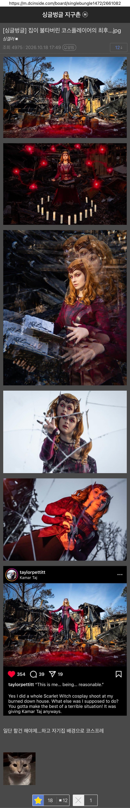

할건 해야제 ㅋㅋ

할건 해야제 ㅋㅋ
ai입니다(제발 ㅠㅠ)
이거 나중에는 코스프레때문에 집까지태운 코스어 이런걸로 올라오는거 아니냐 ㅋㅋㅋㅋㅋㅋㅋㅋㅋㅋㅋㅋㅋㅋㅋㅋㅋㅋㅋ
광기
완다인가
코스모 이바보
수 호 천 사!!!!
이미 타버린건 어쩔 수 없다. 중요한건 이제 무엇을 할 것인가
니가 태웠구나
일류네 ㄷㄷㄷ
ㅋㅋ 보험 받을 생각(싱글벙글)
캬... 집도 코스플레이시키네
프로다 프로야
진짜 일류 그 자체...
집 불탈때 완다 코스할 생각에 싱글벙글 했을듯
딴건다 괜찮은데 막짤은 정상영업합니다 짤 생각나
집이 불탈때 코스의상을 먼저 챙긴건가? ... ㅋㅋㅋ
순간 코스가 아니라 진짜인줄 ㅋㅋㅋ
배경이 꼭 진짜같아요..!